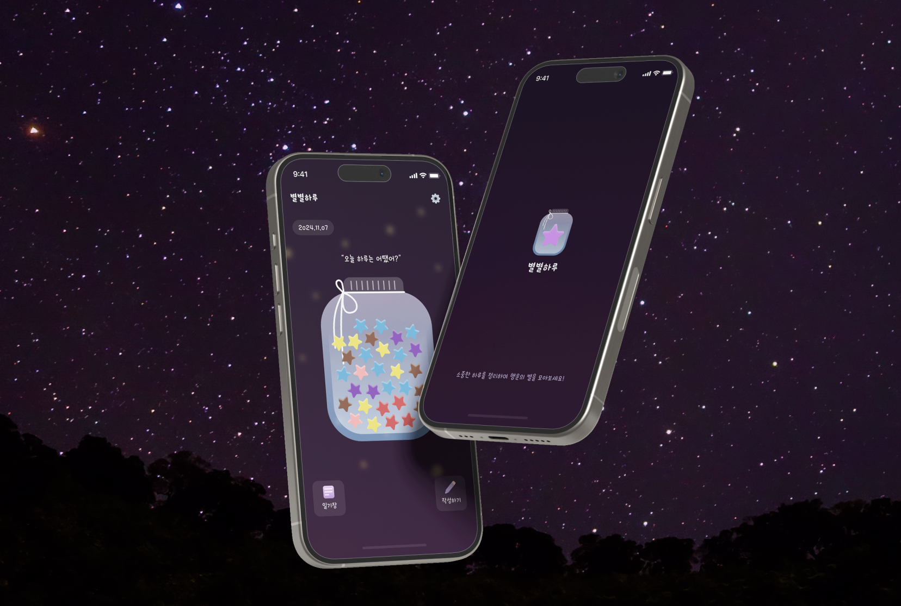
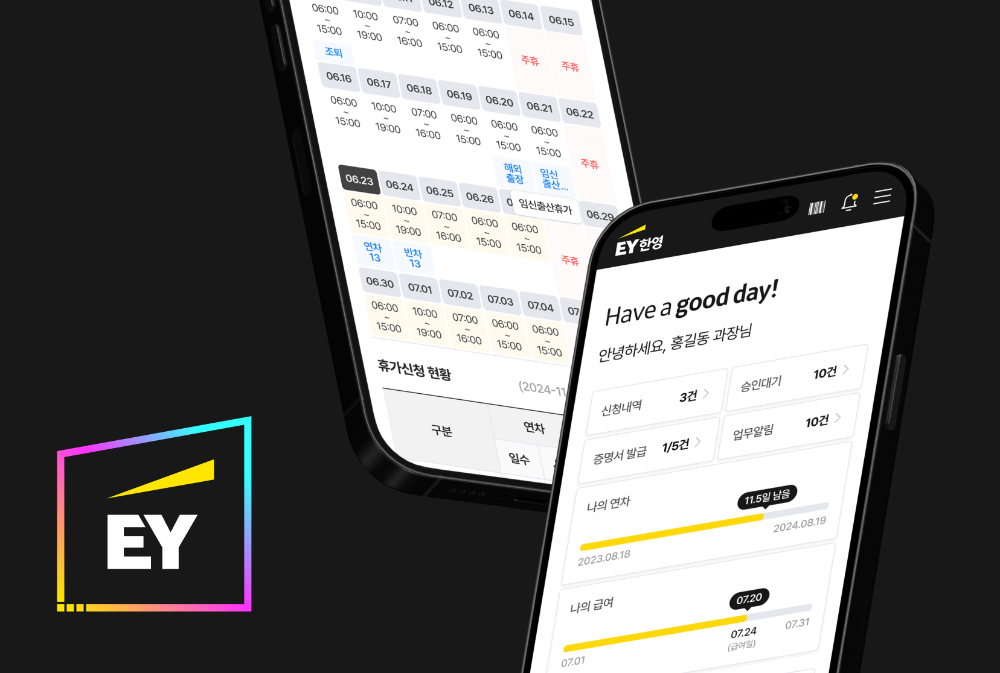

SCROLL DOWN
S
T
R
U
C
T
x

구조 위에 감각을 더해, 더 나은 인터페이스를 만들어가고 있습니다.
I
N
T
E
R
F
A
C
E
구조 위에 감각을 더해, 더 나은 인터페이스를 만들어가고 있습니다.
Frontend Engineer
with a Foundation
퍼블리싱으로 프로젝트의 구조를 설계해온 5년 차 웹 퍼블리셔 & 프론트엔드 개발자 조정원입니다.
단순히 화면을 구현하는 것을 넘어, 확장성과 유지보수를 고려한 견고한 골격을 만드는 데 집중해왔습니다.
이제는 프론트엔드 개발로 영역을 확장하며 구조 위에 로직과 인터랙션을 더해 완성도 높은 인터페이스를 만들어가고 있습니다.
단순히 화면을 구현하는 것을 넘어, 확장성과 유지보수를 고려한 견고한 골격을 만드는 데 집중해왔습니다.
이제는 프론트엔드 개발로 영역을 확장하며 구조 위에 로직과 인터랙션을 더해 완성도 높은 인터페이스를 만들어가고 있습니다.
다양한 프로젝트를 수행하며
설계부터 인터랙션 구현까지 주도적으로 참여해 완성도 높은 프론트엔드 결과물을 만들어왔습니다.
[별별하루]Starry Diary
하루에 하나씩 별을 접어 작은 병에 차곡차곡 담아가는, 기록을 추억으로 남기는 감성 웹 애플리케이션입니다.
일상의 조각을 별빛으로 바꾸어, 시간이 흐를수록 더 빛나는 나만의 우주를 만들어갑니다. ✨

[EY한영]급여관리 시스템
EY한영 급여·근태 관리 프로젝트는 구성원의 근무 기록을 체계적으로 관리하는 내부 운영 시스템입니다.
복잡한 급여 정산과 근태 흐름을 한눈에 파악할 수 있도록 정돈해, 조직의 신뢰와 효율을 함께 높이는 데 초점을 두었습니다.

[3D]Three.js를 활용한 3D 구현
EY한영 급여·근태 관리 프로젝트는 구성원의 근무 기록을 체계적으로 관리하는 내부 운영 시스템입니다.
복잡한 급여 정산과 근태 흐름을 한눈에 파악할 수 있도록 정돈해, 조직의 신뢰와 효율을 함께 높이는 데 초점을 두었습니다.